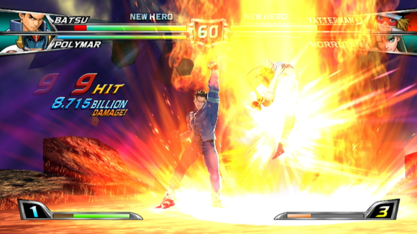
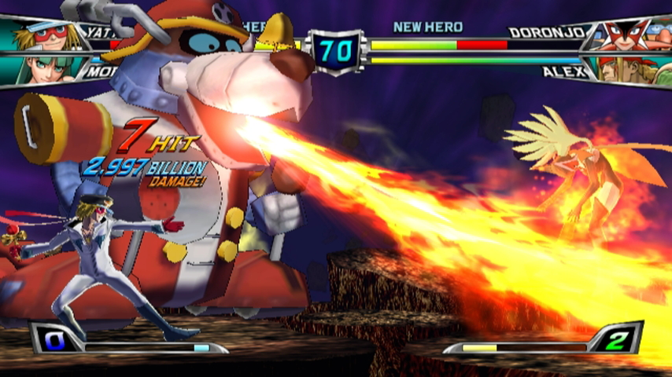
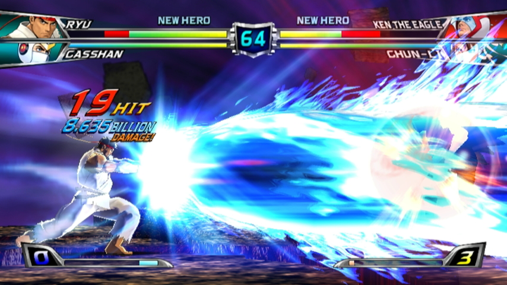
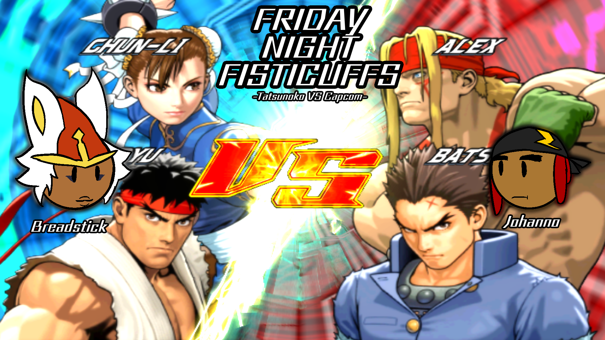

So this is Breadstick. She's the end result of me being really bored at 4am and going "hey wouldn't it be funny
if I made a character based off of a Pokemon who had no real story other than she likes fighting games?
...Then I did exactly that. Well-timed too because I started playing the totally-not-obscure fighting game.
Tatsunoko vs Capcom. I still listen to the game's opening song to this day
|  |  |  |
|  |
Special Guest...my friend, Johan!